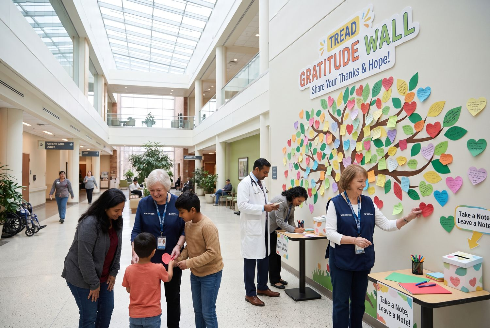

Lend a hand, a smile, or a pair of walking shoes. Tread volunteers help patients and families feel welcome.
 Ages 16 and upFlexible shifts
Ages 16 and upFlexible shifts Training provided
Training provided
There is a role for every kind of helper, whether you like talking, walking, planting, or playing.

Greet visitors, give directions, and point the way with a smile.
Lead walking groups and keep the footprints trail friendly.

Keep the notes, hearts, and leaves fresh on our wall.
Bring snacks, blankets, and cheer to waiting rooms.
Read, play, and help little ones feel at ease.

Support health fairs, vaccine days, and community walks.
Fill out a short application and tell us what you enjoy.
A friendly conversation with our volunteer team, and a quick background check.
Learn the ropes, meet your team, and get your blue vest.
A buddy shows you around. Most volunteers give a few hours each week.
Not at all. Our volunteers help with directions, comfort, and community, not with medical care.
Most volunteers give two to four hours a week, but there are one-time event roles, too.
Yes. Teens 16 and older are welcome, and some programs have special teen shifts.
Yes. Every volunteer goes through an orientation and is paired with a buddy for their first shifts.
We would love to have you on the team.
Apply to volunteer